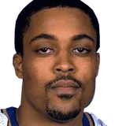

Played 2 seasons for 1 team; his teams went 41–25 in his games.
Jump to: Record by opponent · Season by season · Teammate help
Compare Reggie Smith with…
Final NBA finish, season by season
Title Finals Other playoffs Missed playoffs. #1 = champion; the dashed line is last place that season. Each point opens that season's final standings.
All 27 teams ranked in 1992-93, his best finish (#9)Teammate help
 Clyde Drexler2.02 seasons
Clyde Drexler2.02 seasons- Clifford Robinson1.52 seasons
- Terry Porter1.01 season
Career
Career records (W–L, W − L, with and without) include 2026-27 games through Nov. 23, 2026; season counts and finishes are through 2025-26. Each card opens its board in the same scope. How we count.

Latest completed seasons
Season by season
Newest first; every header sorts. Final NBA finish is the team's rank among all teams that season (#1 = champion) and opens that season's standings. "Without him" uses the team-season window; the span line counts only the games between his first and last game for the team.
Teammate help by season
Help this season = Teammates Score points for honors won that season by teammates who shared a game with him, with every teammate that adds to it. Only honors won in that same season count. How help works.
- 1993-94
 Portland
Clifford Robinson All-Star143 gClyde Drexler All-Star136 g
Portland
Clifford Robinson All-Star143 gClyde Drexler All-Star136 g
Help this season: 2 = 1 Clifford Robinson + 1 Clyde Drexler
Other teammates (no honors that season): Rod Strickland 43 g, Buck Williams 42 g, Mark Bryant 40 g, Jerome Kersey 40 g, Terry Porter 40 g, Harvey Grant 39 g, Tracy Murray 36 g, James Robinson 34 g, Jaren Jackson 20 g, Kevin Thompson 14 g, Chris Dudley 1 g
- 1992-93Portland
Terry Porter All-Star123 gClyde Drexler All-Star117 gClifford Robinson Sixth Man0.523 g
Help this season: 2.5 = 1 Terry Porter + 1 Clyde Drexler + 0.5 Clifford Robinson
Other teammates (no honors that season): Mark Bryant 23 g, Mario Elie 23 g, Buck Williams 23 g, Dave Johnson 22 g, Rod Strickland 22 g, Tracy Murray 21 g, Kevin Duckworth 20 g, Jerome Kersey 18 g, Delaney Rudd 7 g, Joe Wolf 6 g
Record against each opponent
Regular season, through 2025-26 (2026-27 games not included): 66 games, 41–25, against 25 franchises.
Grouped by franchise (named as today); game lists keep each team's name that season. Filters and the tab are kept in the URL, so a filtered view can be shared.
| Games list | |||||||
|---|---|---|---|---|---|---|---|
| 5 | 4–1 | 80.0% | +3 | N/A | 1992-93 to 1993-94 | ||
| 5 | 1–4 | 20.0% | −3 | N/A | 1992-93 to 1993-94 | ||
| 4 | 2–2 | 50.0% | 0 | N/A | 1993-94 | ||
| 3 | 1–2 | 33.3% | −1 | N/A | 1992-93 to 1993-94 | ||
| 3 | 3–0 | 100.0% | +3 | N/A | 1992-93 to 1993-94 | ||
| 3 | 2–1 | 66.7% | +1 | N/A | 1992-93 to 1993-94 | ||
| 3 | 3–0 | 100.0% | +3 | N/A | 1992-93 to 1993-94 | ||
| 3 | 2–1 | 66.7% | +1 | N/A | 1992-93 to 1993-94 | ||
| 3 | 3–0 | 100.0% | +3 | N/A | 1993-94 | ||
| 3 | 3–0 | 100.0% | +3 | N/A | 1992-93 to 1993-94 | ||
| 3 | 3–0 | 100.0% | +3 | N/A | 1992-93 to 1993-94 | ||
| 3 | 0–3 | 0.0% | −3 | N/A | 1992-93 to 1993-94 | ||
| 3 | 0–3 | 0.0% | −3 | N/A | 1992-93 to 1993-94 | ||
| 3 | 1–2 | 33.3% | −1 | N/A | 1992-93 to 1993-94 | ||
| 3 | 2–1 | 66.7% | +1 | N/A | 1992-93 to 1993-94 | ||
| 3 | 2–1 | 66.7% | +1 | N/A | 1992-93 to 1993-94 | ||
| 2 | 1–1 | 50.0% | 0 | N/A | 1993-94 | ||
| 2 | 2–0 | 100.0% | +2 | N/A | 1993-94 | ||
| 2 | 0–2 | 0.0% | −2 | N/A | 1993-94 | ||
| 2 | 1–1 | 50.0% | 0 | N/A | 1993-94 | ||
| 1 | 1–0 | 100.0% | +1 | N/A | 1993-94 | ||
| 1 | 1–0 | 100.0% | +1 | N/A | 1992-93 | ||
| 1 | 1–0 | 100.0% | +1 | N/A | 1992-93 | ||
| 1 | 1–0 | 100.0% | +1 | N/A | 1993-94 | ||
| 1 | 1–0 | 100.0% | +1 | N/A | 1993-94 |
Rows add up to his career record in his games. A playoff series counts when he played in it; early round-robin games show as games only. How we count.
Arrival and departure
Team wins per 82 games the season before he arrived vs his first season there, and his last season vs the season after he left. He leaves a team only when his next season with games is for another team (or he never plays again); whole seasons he missed and came back from are one "Missed" row with the team's record without him. Per 82 so short seasons compare fairly. These are team records, not a measure of what he did.
Best duos
Team record in regular-season games both played, top 10 by win %, at least 50 games together.
- Tracy Murray 37–20 64.9%
- Terry Porter 40–23 63.5%
- Buck Williams 41–24 63.1%
- Clifford Robinson 41–25 62.1%
- Jerome Kersey 36–22 62.1%

Rod Strickland 40–25 61.5%- Clyde Drexler
32–21 60.4%
- Mark Bryant 38–25 60.3%
With and without his teammates
His 12 teammates with the most regular-season games together. "Together" is the team's record in the games both played for it; "Without him" is the team's record in the games Reggie Smith played for that team while the teammate was on it (between the teammate's first and last game for the team, the appearance span) and the teammate did not play. Fewer than 20 games without him: no gap. Games through Nov. 23, 2026. How we count.
- Clifford RobinsonPortland 1992-93 to 1993-94
- Together
- 41–25 62.1%
- Without him
- N/A N/A
- Gap
- Too few games without him
- Buck WilliamsPortland 1992-93 to 1993-94
- Together
- 41–24 63.1%
- Without him
- 0–1 0.0%
- Gap
- Too few games without him
- Rod StricklandPortland 1992-93 to 1993-94
- Together
- 40–25 61.5%
- Without him
- 1–0 100.0%
- Gap
- Too few games without him
- Terry PorterPortland 1992-93 to 1993-94
- Together
- 40–23 63.5%
- Without him
- 1–2 33.3%
- Gap
- Too few games without him
- Mark BryantPortland 1992-93 to 1993-94
- Together
- 38–25 60.3%
- Without him
- 3–0 100.0%
- Gap
- Too few games without him
- Jerome KerseyPortland 1992-93 to 1993-94
- Together
- 36–22 62.1%
- Without him
- 5–3 62.5%
- Gap
- Too few games without him
- Tracy MurrayPortland 1992-93 to 1993-94
- Together
- 37–20 64.9%
- Without him
- 3–5 37.5%
- Gap
- Too few games without him
- Clyde DrexlerPortland 1992-93 to 1993-94
- Together
- 32–21 60.4%
- Without him
- 9–4 69.2%
- Gap
- Too few games without him
- Harvey GrantPortland 1993-94
- Together
- 24–15 61.5%
- Without him
- 2–2 50.0%
- Gap
- Too few games without him
- James RobinsonPortland 1993-94
- Together
- 21–13 61.8%
- Without him
- 5–4 55.6%
- Gap
- Too few games without him
 Mario EliePortland 1992-93
Mario EliePortland 1992-93- Together
- 15–8 65.2%
- Without him
- N/A N/A
- Gap
- Too few games without him
- Dave JohnsonPortland 1992-93
- Together
- 15–7 68.2%
- Without him
- 0–1 0.0%
- Gap
- Too few games without him